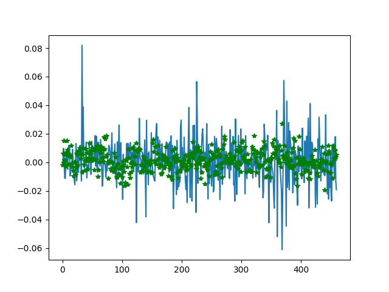
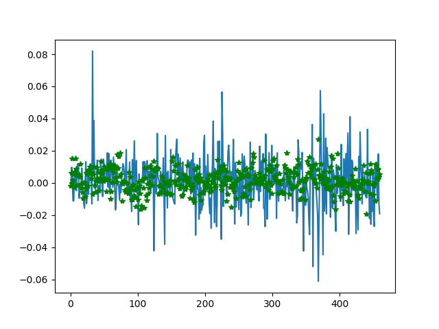
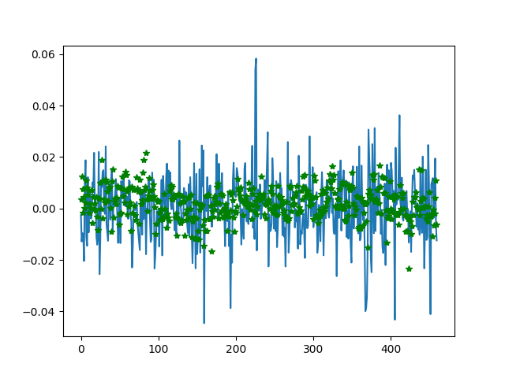
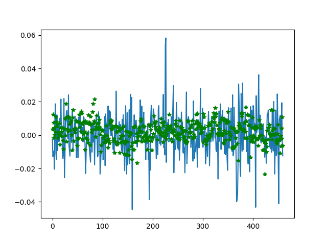

A machine learning project that predicts sotck price in the future.
It's a course project of CSIT 600D Introduction to Big Data, HKUST, 2017.
In brief, this a regression problem(supervised learning) in machine learing.
Raw data is preprocessed as TP Matrix format.

Convolutional Neural Networks is used to fit the labeled data.

The CNNs gives a predicted stock price change ratio accroding to each input.
For one single stock, we train a specific model.
On the morning of each trading day, we use the model to predict. - If the output is large enough(positive), we buy an amount of stock. - If the ouput is small enough(negative), we sell an amount of stock. - Otherwise, we just take the "hold" action.
Three models are trained for three different stocks. The machine learning results and backtesting results are shown below:
Apple Inc. (AAPL)
Machine learning result for both train set(left) and test set(right); Blue lines stand for ground truth and green stars for predictions.
 

Backtesting results

General Electric Company (GE)
Machine learning result for both train set(left) and test set(right).


Backtesting results

The Boeing Company (BA)
Machine learning result for both train set(left) and test set(right).
 

Backtesting results

As we can see, backtesting works fine on the first two stocks but doesn't on the third one.
Till now, this project is just a demo built for course. And we've listed some needed improvements:
HAN, Siyuan / [@SiYuanHan](https://github.com/SiYuanHan)
LI, Jianda / [@jiandaLi](https://github.com/jiandaLi)
HU, Xiaoyu / [@HuXiaoyu1994](https://github.com/HuXiaoyu1994)
YANG, Austin Liu / [@AustinNeverPee](https://github.com/AustinNeverPee)